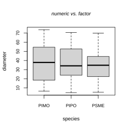
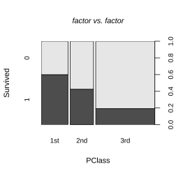
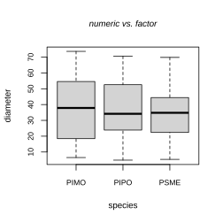
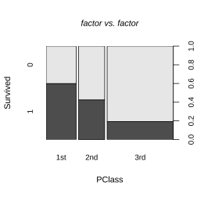
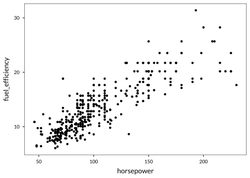
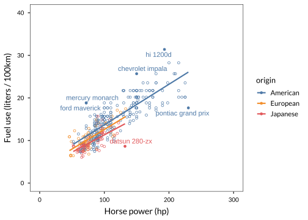

Chapter 5 Visualizing data and making reports
5.1 Introduction
Data visualization is an integral part of any data analytical project. We use data viz to spot patterns in data, check model assumptions, communicate findings, and to convince the audience that our analysis and conclusions make sense. Data viz is not something you only do at the end, but we cycle between analysis and visualization. It is therefore not only an important skill to make beautiful visualizations in the final communication of your results, but also to be able to make quick & dirty graphs at any step in the analysis.
We do not only use visualizations, but also like to combine text, tables, figures, images, and well-formatted text in reports. We now have a powerful tool available in R, the rmarkdown document - a flexible toolkit to generate documents containing all results from R (with or without the code). These reports ensure that the results you see are made from the code in the document, we never have to ask: which version of my code produced those results? We already used rmarkdown in Chapter 2, but go a few steps further here and provide useful tips & tricks.
This chapter is different from the rest: we do not provide a complete beginners guide to either data visualization with ggplot2, or reporting with rmarkdown. We point to online resources for getting started, including comprehensive manuals, and galleries of examples. Instead, we focus on pointing out typical difficulties when getting started with these tools, and give some handy tips that may go unnoticed.
For data visualization, also be aware that the entire book in front of you includes many figures produced with ggplot2 or base graphics - we encourage you to study the examples. As always, learning from example is the easiest.
5.2 Visualizing data
5.2.1 Base graphics or ggplot2?
R comes with two graphics systems, that cannot be used together. The base graphics system has been part of R from the start, and continues to be used today. The second system is the grid system, and the most popular package that uses this system is ggplot2, a package in development for over 10 years that now sees very wide application, and numerous add-ons and extensions.
Personally, I have used base graphics since 2001, and resisted switching to ggplot2 for a very long time. I now use ggplot2 for visualizing data, but continue to use base graphics as well, for a few reasons - especially because many add-on packaged include some quick plotting function that returns a base plot.
You can read around the web for many opinionated accounts on why we should use ggplot2 or the other (for example here).
A few points to consider:
- Use
ggplot2if you are a newcomer, because it is easier to make more complex graphs. For example, it is much easier to make multi-panel, multi-line, multi-everything figures than with base graphics. Notable examples include multi-panel figures with grouped bar plots, adding regression and smoothed lines with confidence bands to plots, overlapping area plots, histograms and ribbons. All of these plots are possible with base, but usually require more code and more programming. - It is generally easier to achieve consistent figure formatting with
ggplot2, through the use of themes. - Many packages include some built-in plotting function, more often than not these use base graphics. It is usually much easier to use those functions directly than to implement the figure from scratch in
ggplot2. A basic understanding of base graphics is therefore useful in practice. - Sometimes, base graphics are easier, especially when you are experimenting and want to make quick and dirty plots. To plot a mathematical function, we can do
curve(x^3, from=-1, to=1)- this is not so easy inggplot2. - There is no support for 3D graphics in
ggplot2, butbasehas a number of possibilities. That said, you probably do not want to make many 3D plots. - Use base graphics when you are making a simple plot, and wish to avoid dependencies. Keeping dependencies to a minimum will make it more likely your code works in the future, and on someone elses machine. The
ggplot2package is rather stable these days, but has changed dramatically in the past - often breaking old code.
For the reasons mentioned above, in this book we mostly use ggplot2, except when base graphics are a lot easier (that is, use less code).
5.2.2 Base graphics
In base graphics, we can choose from the following main plotting functions (this list is not complete, especially if you consider add-on packages):
| Function | Key functions |
|---|---|
plot |
Scatter plots, line plots, various others. |
barplot |
Bar plot (including stacked and grouped bar plots) |
hist |
Histograms and (relative) frequency diagrams |
curve |
Curves of mathematical expressions |
pie |
Pie charts (for less scientific uses) |
boxplot |
Box-and-whisker plots |
symbols |
Like scatter plot, but symbols are sized by another variable |
Here it is useful to know that plot is a so-called generic function, which has methods for many special objects in R. For example, if we fit a linear regression:
We can use the very brief command plot(lmfit) to produce four diagnostic plots. This works because a function called plot.lm is actually used when you send an lm object to the plot function (thus we can look at useful options in this case in the help page ?plot.lm).
Similarly, plot will make different plots based on what type of data you use. In Fig. 5.1 four examples are shown; each of these is the result from a call to plot(), but with different data types.
 

Figure 5.1: Four possible outcomes of a basic call to plot(), depending on whether the Y and X variables are numeric or factor variables. The term numeric dataframe means a dataframe where all columns are numeric.
The way that plot gives different results depending on data types is both a good thing (for basic plots, you need very little code), and a bad thing because reading the code often does not tell you what sort of plot will be produced, and where to read the documentation (?plot, ?plot.default, ?plot.factor?).
5.2.3 Histograms
One reason I still use base graphics is the quickest way to draw a histogram (frequency or density diagram). We often use these during analyses, to get an idea of the kind data contained in a vector.
data(vessel)
# Some formatting first. par() is a powerful yet difficult to learn function.
# If you leave out 'breaks', the breaks are automatically calculated.
# A setting worth experimenting with though!!
par(mar=c(5,5,2,2), cex.lab=1.1)
hist(vessel$vesseldiam, main = "", breaks=50, col="darkgoldenrod3",
xlab="Tree vessel diameter (micrometer)")
box()Figure 5.2: A simple histogram of the vessel dataset.
5.2.4 Resources
One standout resource with examples and explanations is here: http://www.sthda.com/english/wiki/r-base-graphs.
5.3 ggplot2
The ggplot2 package is an incredibly rich and powerful toolkit to construct plots. It is far beyond the scope of this book to provide a complete overview of the package, but luckily lots of free online resources are available (see Section 5.3.5).
We will show the functionality of ggplot2 by providing two examples, one scatterplot, and one barplot. Since we use ggplot2 throughout this book, you can find many more examples. The following three examples were chosen because they highlight a few key options.
5.3.1 Preparing the data for plotting
To use ggplot2, our data have to always be in long format, where each row represents an observation, and each column in the dataframe represents a type of measurement. Most of the datasets included in the lgrdata package are already in long format. One exception is the dutchelection dataset:
## Date VVD PvdA PVV CDA SP D66 GL CU SGP PvdD FiftyPlus
## 1 2012-03-22 22.1 16.8 13.9 9.4 16.8 7.7 4.5 3.3 1.5 2.4 1.1
## 2 2012-04-05 23.6 17.1 13.3 8.8 16.3 8.7 4.1 3.2 1.4 2.0 0.8
## 3 2012-04-19 24.0 17.3 12.0 8.2 17.0 8.8 3.5 3.3 1.6 3.1 0.8We cannot really use ggplot2 when the data are formatted like this. Instead we want to have a dataframe with columns Date, party, and vote_percent, so that we can label the graph by political party. As we saw in Section 4.3, quite magically we can use melt from reshape2 :
library(reshape2)
dutchlong <- melt(dutchelection, variable.name = "party", value.name="vote_percent")
head(dutchlong, 3)## Date party vote_percent
## 1 2012-03-22 VVD 22.1
## 2 2012-04-05 VVD 23.6
## 3 2012-04-19 VVD 24.05.3.2 Scatterplot example
Here we show two examples of a scatter plot. In practice you start with the simplest plot you can think of, then gradually add layers and other elements. Here, the quickest way to make a scatter plot is like this,
# Minimal
data(automobiles)
ggplot(automobiles, aes(x = horsepower, y = fuel_efficiency)) +
geom_point()## Warning: Removed 6 rows containing missing values (geom_point).
Explanation:
- The first argument to
ggplotis a dataframe (automobiles) - The
aesfunction defines the aesthetics, herexfor X-axis, andyfor Y-axis. ggplotdoesnt really plot anything yet, just gets things ready. Layers are added with+. Here, a single layer with points.
Next, we want to extend this example by including various other elements:
- Plotting symbols colored by Region.
- A linear regression line, one for each of the three
Regions. - Text labels identifying outliers.
- A legend.
- Better axis labels.
Study the example below how each of these was included:
# Extended
data(automobiles)
library(ggrepel)
library(dplyr)
library(ggthemes)
automobiles2 <- mutate(automobiles,
resid = residuals(lm(fuel_efficiency ~ horsepower,
na.action=na.exclude)))
ggplot(automobiles2, aes(x = horsepower, y = fuel_efficiency,
col = origin,
label = car_name)) +
geom_point(pch = ifelse(abs(automobiles2$resid) > 6, 19, 1)) +
geom_text_repel(data = subset(automobiles2, abs(resid) > 6),
show.legend=FALSE) +
lims(x = c(0,300), y = c(0,40)) +
stat_smooth(method = "lm", se = FALSE) +
scale_colour_tableau() +
labs(x = "Horse power (hp)", y = "Fuel use (liters / 100km)")
5.3.3 Area plot example
A stacked area chart can be quickly implemented with the geom_area function, like the next example. Note how we use another aesthetic, fill, to set the colour of the filled areas by country.
5.3.4 Barplot example
More complex barplots is one area where ggplot2 is much, much easier to use than base graphics. If you want to represent count data as bars - a common application of barplots - ggplot2 does the counting for you automatically, saving a step where such tables of counts have to be constructed.
If instead you want to make a barplot of data as they are (that is, dont make tables first), use the setting geom_bar(stat = "identity"), instead of stat = "count", as in the example below.
In the following example we use the titanic data, available in the lgrdata package.
library(lgrdata)
data(titanic)
# Important to convert factor variables to factors!
# 'Survived' is coded as 0,1 - but this is really a factor.
titanic$Survived <- as.factor(titanic$Survived)
library(ggplot2)
library(ggthemes)The following code is the minimal code needed to make a barplot with two panels (one for female passengers, one for male), counting passengers that have survived or died, for each of the three passenger classes.
# Result not shown - see next example
ggplot(titanic, aes(x=PClass, fill=Survived)) +
geom_bar(stat="count", position=position_dodge()) +
facet_wrap(~Sex)You can run the code above yourself to see what is produced. It does not look great, so instead we re-format the legend, the colors, etc., and end up with Fig. ??. For both of these figures, make sure that Survived is a factor variable, otherwise the plot wont look right.
ggplot(titanic, aes(x=PClass, fill=Survived)) + # bars by passenger class,
# split by 'Survived'
scale_fill_manual(labels=c("Died", "Survived"), # labels for legend
values=c("red2","grey")) + # colors for bars (and legend)
geom_bar(stat="count", position=position_dodge()) + # count data, bars side by side
facet_wrap(~Sex) + # panels by Sex
theme(legend.title=element_blank()) # no legend titleSame figure but stacked bars, expressed as percent of total (Fig. ??).
ggplot(titanic, aes(x=PClass, fill=as.factor(Survived))) +
scale_fill_manual(labels=c("Died", "Survived"), # labels for legend
values=c("red2","grey")) + # colors for bars (and legend)
geom_bar(stat="count", position=position_fill()) + # count the data, stack the bars
scale_y_continuous(labels=scales::percent) + # express y-axis as %
facet_wrap(~Sex) + # two panels for each sex
theme(legend.title=element_blank()) # no legend title5.3.5 Resources
The web is bursting with great ggplot2 tutorials and collections of examples. If you are stuck on some aspect, simply type your question into Google, and you will usually end up at a useful Stackoverflow post.
A selection of useful resources is:
- My favorite resources with lots of small examples: http://www.cookbook-r.com/Graphs/
- A very practical gallery guide at http://www.sthda.com/english/wiki/ggplot2-essentials
- Official page with (extensive) documentation: https://ggplot2.tidyverse.org/
- A more gentle introduction to
ggplot2at https://r4ds.had.co.nz/data-visualisation.html - An attractive gallery of useful plots, with all code at http://r-statistics.co/Top50-Ggplot2-Visualizations-MasterList-R-Code.html
The ggplot2 package has many extensions, packages that offer additional options, themes, plotting layouts, etc. In this book, we only use a couple of add-on packages for reasons of brevity. These include:
ggthemes: an excellent collection of themes and color palettesscales: useful functions for formatting axes, adjusting colorsgridExtra: to arrange multiple, separate plots, on one page
5.4 Making reports
Script files are good for simple analyses, and they are great for storing small amounts of code that you would like to use in lots of different projects. They are also the right solution if you want to produce R scripts that are executed as part of a larger project, for example from the command line, or executed on a schedule (e.g.daily data quality checking). In Section 2.12.2 we give a few more tips.
But, scripts are not the best way to share your results with others. Instead, we strongly suggest you use R markdown - a document format that includes both text with markup, and code chunks, bits of R code that is executed, and the results placed in the document.
Markdown is a simple set of rules for formatting text files so that they are both human-readable and processable by software, and is used not just by rmarkdown but in many applications (like Github and Stackoverflow). R Markdown simply adds R, by allowing code chunks with various options.
5.4.1 Getting started
RStudio offers a handy editor for markdown files, and starts with an example file that shows many of the features. Start a new markdown file by choosing File > New File > R Markdown. For now, leave the default settings. The new R markdown document (which is just a text file with the extension .Rmd) already contains some example code. Run this example by clicking the button just above the markdown document (Knit HTML). The example code will generate a new document (an HTML page), which opens in your browser You can see that the output contains text, R code, and even a plot.
rmarkdown file). First install the knitr and rmarkdown packages. Next, click the Knit button in the upper-right hand corner just above the file. An HTML file was created. Find it and open it.
5.4.2 Tips
Start with an example document
When you open a new rmarkdown file (see previous section), the first step is to delete everything in the example document, except the top section and the first code chunk. Your rmarkdown document will now look like this:
Modify the output style
You can add lots of options to the header (the bit between --), that affect how the conversion to HTML works (including style, settings for the table of contents, author, date, etc.). See the Rstudio help page for the HTML version of rmarkdown by following this link.
We list a few useful options; to see how these can be used search for them on the link above.
code_folding: hide, hides the code in the document, but adds a button to reveal the code.toc_float: true, a very nice floating table of contents (the contents are always visible in a menu to the left)theme: cosmo, or lots of other choices to be picked from this gallery, changes the colors, fonts, and general appearance of the document.
Learn markdown syntax for text formatting
As mentioned, the rest of the document contains two types of input: text with markup, and code chunks. Open a new rmarkdown document to see what the text with input looks like, and note the use of sections, formatting (bold, italic, etc.), weblinks, and so on. Follow the Rstudio rmarkdown lessons to learn more.
Set options for individual code chunks
The code chunks contain R code, which will be executed, and the results will be visible in the eventual document (in our case, an HTML page). An R code chunk may look like this,
Here, titanicglm is a label for the chunk (you dont need to set it), and echo = TRUE make the code visible in the document, and eval=TRUE actually runs the code in the chunk. Both these options are used a lot. You use echo=FALSE to not show code, for example when there is too much messy code to share for this particular block. You use eval = FALSE to disable execution of a single code chunk. This is very useful when you have some code that simply does not work yet, but you hate using comments (#) to disable it, instead you can place the code in its own chunk and set echo=FALSE, eval=FALSE.
Set options for figure output
An important step is to control the output of figures. The documentation (see @Section(rmarkdownresources)) is a bit overwhelming, but here is an example with some useful settings:
```{r titanicplot1, fig.cap="Number of passengers by Sex and PClass", fig.width=4, fig.height=4, dev="svg", echo = -1}`r''`
par(bg="azure")
with(titanic, spineplot(Sex, PClass))
```Here, fig.cap makes a figure caption (but figures will not be automatically numbered, see below for an alternative), fig.width and fig.height set the figure size in inches, dev="svg" sets the graphic device to SVG (an outstanding format for the web) - you need to install svglite for this to work. Finally echo=-1 hides the first row of the code in the output (in this case, we dont want the reader to be bothered by graphical settings in par()).
Set options for all code chunks
The section shown above that contains knitr::opts_chunk$set(echo = TRUE) sets chunk options for the entire document. An often used feature here is to hide all code from the eventual document by setting echo=FALSE, or set the figure size for all chunks with fig.width = 5, fig.height = 5, or use a particular graphics device (dev = 'svg').
Auto-numbering of figures and tables
In the example above, we set a caption for a figure, but the figures are not automatically numbered in rmarkdown. To enable this, all you have to do is install the bookdown package, and replace the header with this example:
---
title: "Untitled"
output: bookdown::html_document2
---
Everything else should work as expected, but now figures that contain a fig.cap setting will be automatically numbered!
Make R output pretty
One thing you notice quickly is that R output that is usually printed to the screen, will look exactly the same in an rmarkdown document - ugly. For example, try this code chunk:
summary(titanic) The output in the HTML is not attractive, to say the least.
A number of packages will convert raw R output to markdown or HTML output, which can be used effectively in rmarkdown documents. Here we recommend using the pander package to convert many R objects to readable output for use in rmarkdown documents, and the kable function from the knitr package to convert things that look like dataframes. Both packages are very easy to use.
library(pander) # for pander()
library(knitr) # for kable()
library(magrittr) # for %>%
summary(titanic) %>% pander
summary(titanic) %>% kableTry the pander function on many outputs from statistical analyses as well, for example:
test_output <- t.test(Age ~ Sex, data = titanic)
pander(test_output)5.4.3 Resources
The documentation for rmarkdown based documents is a little scattered across various sources. The reason for this is that multiple packages are involved in making an HTML page from an .Rmd file.
- The
knitrpackage handles the execution of the R code in the document, and the integration of the R output into the document. It provides all options that are set at the top of each code chunk, for example to show or hide the code, to control figure size and resolution, captions for tables. All chunk options are listed on theknitrwebsite. - The
rmarkdownpackage (from Rstudio) handles the conversion to the desired output format, for example HTML or PDF. To do so, it uses Pandoc (see below), which is installed automatically with Rstudio. Thermarkdownpackage provides all options at the top of theRmddocument (the so-called YAML header), including the desired output format, and to control many options like the table of contents, format style, custom CSS, and so on. All options forrmarkdownare described on Rstudios website. (Make sure to scroll down and select an output format to read about available options). - Finally, Pandoc is the actual engine to convert our raw text file (including R output formatted by
knitr) to an HTML page, or some other format. Normally you dont have to learn much about Pandocs options, since many settings are already provided byrmarkdown, but the various formatting rules and conversion options are described here.